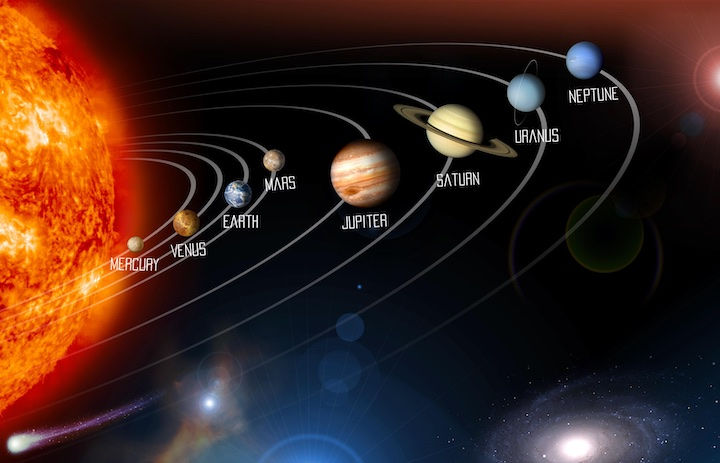
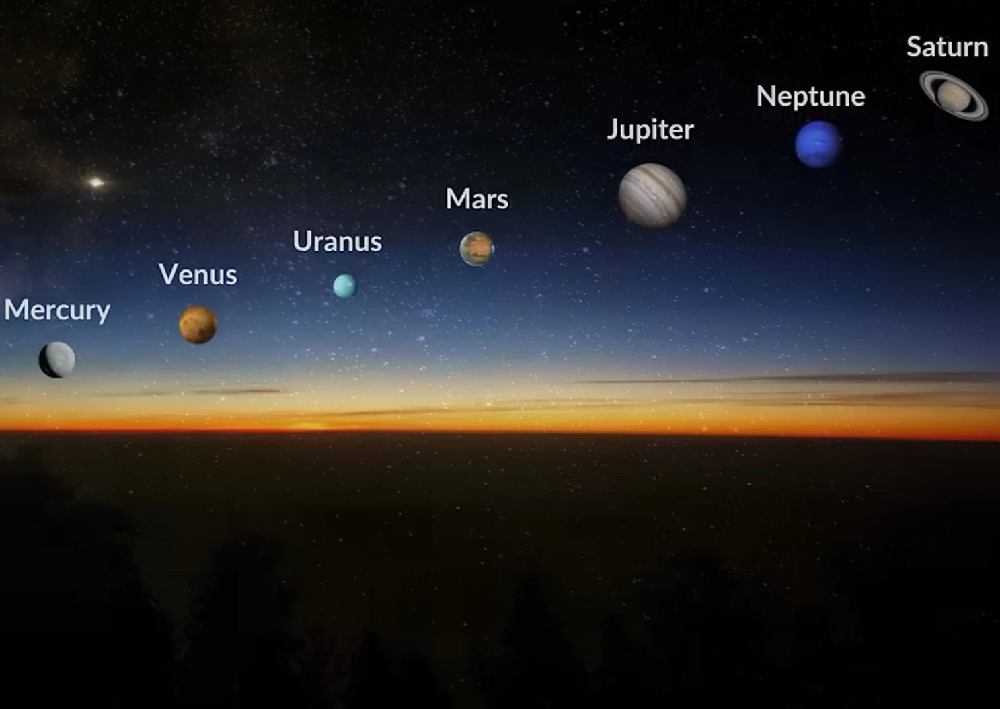

here are some websites about planets to totally check out!
Visit nasa.com
Visit planets info
Planets

What is a Planet?
Definition:
A planet is a celestial body that orbits a star, is large enough to be rounded by its own gravity, and has cleared its neighborhood of other objects.
Ancient Greek Origins:
The word "planet" comes from the Greek word "planetes," meaning "wanderers," as these celestial objects appeared to move across the night sky.
International Astronomical Union (IAU) Definition:
The IAU, a group of astronomers that names objects in our solar system, defines a planet as a body that orbits the Sun, is spherical due to its own gravity, and has cleared its orbital path of other objects.
Dwarf Planets:
Pluto, previously considered a planet, was reclassified as a dwarf planet because it did not meet the IAU's third criteria (clearing its orbital path).
Formation:
Planets are thought to form from a cloud of gas and dust (a nebula) that collapses under its own gravity, forming a young star (a protostar) surrounded by a disk of material.
Accretion:
Planets grow in this disk through the gradual accumulation of material, a process called accretion.
Galaxys
Facts
Here is a photo of all the planets alligning! if this provides help please check out our other pages to see more facts!
